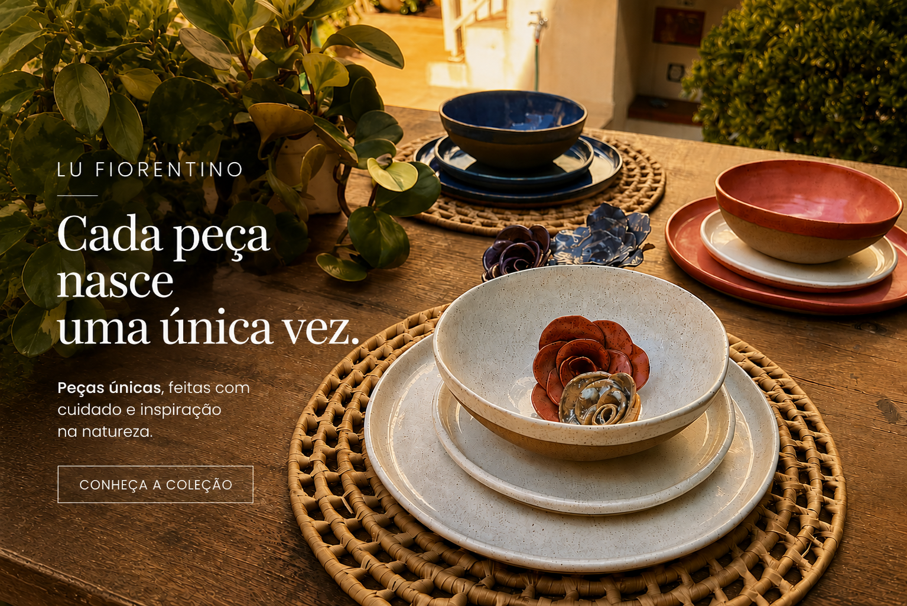

A história
A paixão pela cerâmica
e o valor do feito à mão
O trabalho com a argila nasceu do desejo profundo de desacelerar e criar conexões reais. No torno ou na modelagem manual, cada movimento exige presença. O ofício da cerâmica é um diálogo entre a técnica e a paciência, resultando em objetos que carregam afeto, história e dedicação em cada detalhe.
No ateliê de Lu Fiorentino, o foco está em traduzir sentimentos em formas utilitárias e decorativas. As variações sutis nos esmaltes, as marcas dos dedos e os efeitos imprevisíveis das altas temperaturas do forno não são falhas; são a assinatura de que a peça é viva e verdadeiramente única.
Encomendar uma peça personalizada →O estilo
Uma vitrine de inspirações
Explore nosso estilo de modelagem, esmaltação e acabamento. Estas peças servem de ponto de partida para inspirar sua imaginação — lembrando que criamos designs sob medida de acordo com a sua necessidade.
Procura algo específico para seu espaço ou evento? O canal de encomendas personalizadas está pronto para criar seu projeto.
Processo
Como encomendar sua peça
Você traz a sua ideia
Você compartilha suas necessidades, inspirações, dimensões ou paletas de cores pretendidas. Pode trazer referências visuais ou apenas a intenção do uso no dia a dia.
Nós definimos o design e eu modelo a peça
Alinhamos os acabamentos e dou início à produção manual no ateliê. A peça toma forma passo a passo através das mãos, da secagem adequada e das queimas necessárias.
Você recebe uma obra única
Sua cerâmica exclusiva é embalada de forma altamente segura e enviada direto para a sua casa. Uma obra única pronta para compor a identidade do seu espaço.
O que dizem
Quem já encomendou, aprovou
"A peça ficou exatamente como eu imaginei, cheia de detalhes especiais. Encomendar foi super simples pelo WhatsApp."
Camila R.
"Comprei de presente pro aniversário da minha mãe e ela amou. Dá pra sentir o cuidado em cada detalhe da peça."
Rafael T.
"Atendimento maravilhoso do início ao fim, e a peça chegou impecável, muito bem embalada. Já vou encomendar outra."
Beatriz M.
Contato
Ideias infinitas ganham forma aqui
Fale diretamente comigo pelo WhatsApp para iniciarmos o desenho e planejamento da sua cerâmica sob medida.
Faça sua Encomenda Personalizada